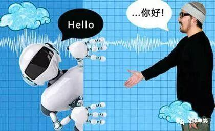
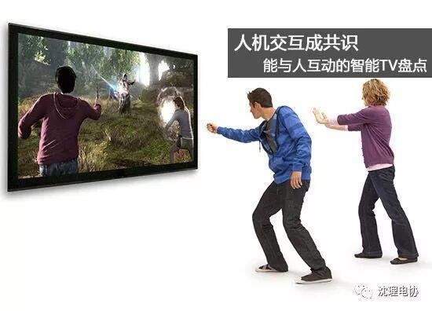

人机交互------人工智能

人机交互、人机互动(英文:Human–Computer Interaction或Human–Machine Interaction，简称HCI或HMI)，是一门研究系统与用户之间的交互关系的学问。系统可以是各种各样的机器，也可以是计算机化的系统和软件。人机交互界面通常是指用户可见的部分。用户通过人机交互界面与系统交流，并进行操作。小如收音机的播放按键，大至飞机上的仪表板、或是发电厂的控制室。人机交互界面的设计要包含用户对系统的理解(即心智模型)，那是为了系统的可用性或者用户友好性。

59年美国学者B.Shackel从人在操纵计算机时如何才能减轻疲劳出发，提出了被认为是人机界面的第一篇文献的关于计算机控制台设计的人机工程学的论文。1960年，Liklider JCK首次提出人机紧密共栖（Human-Computer Close Symbiosis）的概念，被视为人机界面学的启蒙观点。1969年在英国剑桥大学召开了第一次人机系统国际大会，同年第一份专业杂志国际人机研究（IJMMS）创刊。可以说，1969年是人机界面学发展史的里程碑。
在1970年成立了两个HCI研究中心：一个是英国的Loughbocough大学的HUSAT研究中心，另一个是美国Xerox公司的Palo Alto研究中心。

1970年到1973年出版了四本与计算机相关的人机工程学专著，为人机交互界面的发展指明了方向。
20世纪80年代初期，学术界相继出版了六本专著，对最新的人机交互研究成果进行了总结。人机交互学科逐渐形成了自己的理论体系和实践范畴的架构。理论体系方面，从人机工程学独立出来，更加强调认知心理学以及行为学和社会学的某些人文科学的理论指导；实践范畴方面，从人机界面（人机接口）拓延开来，强调计算机对于人的反馈交互作用。人机界面一词被人机交互所取代。HCI中的I，也由Interface(界面/接口)变成了Interaction(交互)。
20世纪90年代后期以来，随着高速处理芯片，多媒体技术和Internet Web技术的迅速发展和普及，人机交互的研究重点放在了智能化交互，多模态（多通道）-多媒体交互，虚拟交互以及人机协同交互等方面，也就是放在以人为在中心的人机交互技术方面。
信息来源：360百科 编辑：王同远